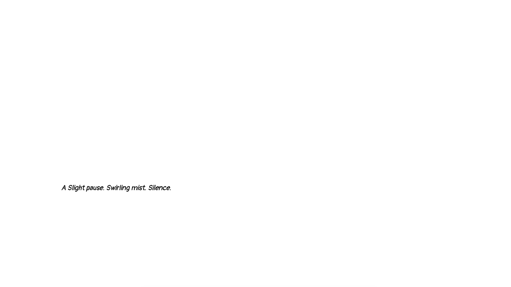
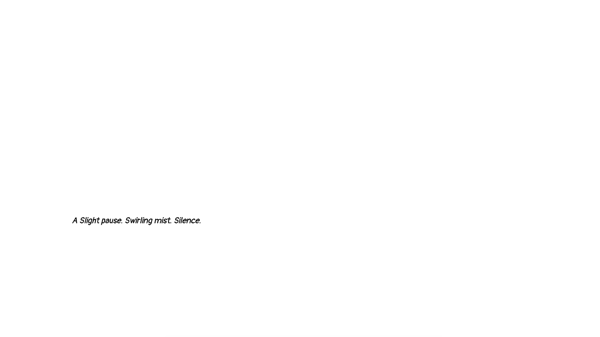

Below is a list of creative explorations I have worked on.
You can either scroll through each item or jump around using the list below.
Enjoy your journey!
The Blue Book

This book was created during summer of 2020.
I was challenged by my editorial proffesor at the time to create an entire book using a single color as the theme. The Blue Book was then born, each page holds a different digital collage I created using Photoshop. Together they tell the story of a blue day.
Below is a selection of spreads from the book.


Eggs
This article was made in response to a call for all articles in our fall paper being related to eggs. I chose to create a piece centered around salmon eggs, or roe. This article in particular was written by Australian journalist Katherine Scott about salmon milking.
First is the original draft I created
ooof.
Here is the final draft.

Here Is New York

This book I created during the fall of 2018. It is a redesign of E.B White's Here Is New York.
I wanted to make the text accesible so I included images and ensured the text size was large enough.
I ended up giving the final copy to my Grandmother, whom loves New York, as a gift.
Below are two spreads from the book


Cognitive

Cognitive is a short magazine I created in the fall of 2018. It is compirsed of an interview with friend Asa and a recipe for the best Pesto you've ever tasted.
Something to think on and something to think with.

I Don't Know
This website depicts the daily dilemma of being indecisive.
You can see the website in action here
back to list
How To Identify Vampires

How To Identify Vampires is an editorial project I worked on during the summer of 2020.
I did research into different vampire folklore from all areas of the world and from throughout history. The final book is an image based identification guide to vampires.
Below are some spreads from the book.

Dialogue
This website is a response to a challenge from my first coding professor to create a single scroll webpage depicting a conversation. We could only use one typeface and color.
I decided to use the opening scene from Monty Python and The Holy Grail.
 

If you would like to explore the website fully, you can here
back to list
Gnarfest
Gnarfest is a fictional free ski competition sponsored by Pabst Blue Ribbon. I created both a t-shirt for the event and a bus wrap for advertising.

back to list
Post Feminist

This magazine mockup was done for a research project into the post feminist sensibility, during my independent study into material culture and object studies.
I wrote a short article about different movies which have impacted the post feminist sensibility, along with an entry essay about what that sensibility is.
back to list
Powder Days
Powder Days is a short video shot during my time living in Utah.
It depicts a day in the life of a ski lover.
back to list
Variations

This simple website is an area for word exploration. You can drag around the words into any order you seem fit.

If you want to try the site out for yourself, you can right here.